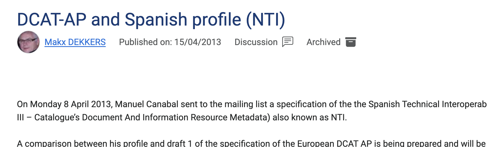
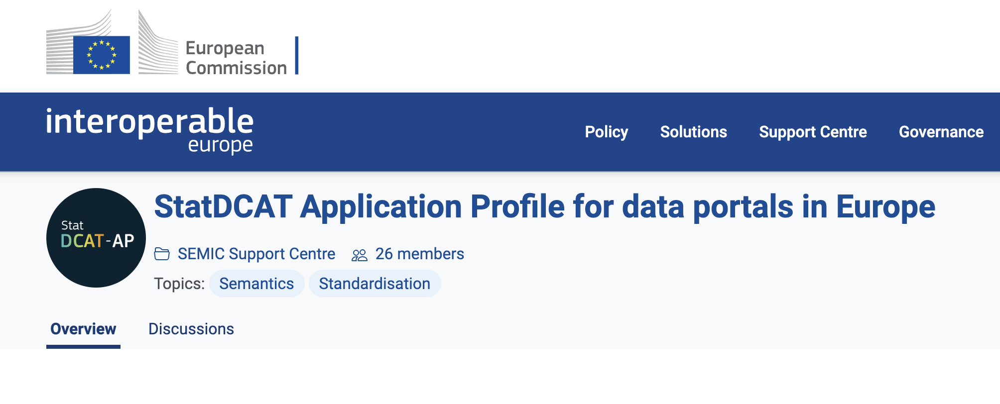

Leaving slide mode.
W3C Open Athletics: standardization process and a success case
Martin Alvarez-Espinar
AthTech Data Conference
Online Session
22 October 2024
Contents
- About W3C
- DCAT as a success case
World Wide Web Consortium
- Created 30 years ago! by Sir Tim Berners-Lee (now W3C Inc.)
- 680+ standards* in 113 technology domains
- 364 Member organizations
Technical Reports, including Recommendations and Group Notes
How the work is done?
Members propose topics, work on them through
- Interest Groups (10 IG): requirements (e.g., Web Payments Security IG)
- Business Groups (2 BG): high-level reqs for verticals (e.g., Entertainment)
- Working Groups (43 WG): technical standards (e.g., CSS WG)
- Community Groups (143 CG): public incubation discussions (e.g., Open Athletics Community Group)
Liaisons with other SDOs
Ecma International, FIDO, ISO...
Always working in public

Process (stages of a spec)

Specs are horizontally reviewed on i18n, a11y, privacy and
security.
Contents
- About W3C
- DCAT as a success case
Back in 2009... Open Data
Open data portals
- So we compiled the portals
- All kind of information (different domains, different formats)
- Some of them had same APIs to export data...
Heterogenous data, formats
(2011) Started the trend mess
Thinking in interoperability
(2014) DCAT was published

DCAT APs (for Spain)

Normative for all the national-wide public bodies
But also adopted by regional and local governments
(Spain) federation of federations
https://datos.gob.es/en/catalogo
(Spain) 250+ publishers!
- ~90k datasets
- Entry point for developers, journalists, researchers, governments...
- Entities publishing machine-readable metadata
- Central metadata harvesting
- Alignment of topics, data granularity, distribution...
https://datos.gob.es/en/catalogo
DCAT became key for interoperability in EU
Figure by SEMIC Support Centre
Even profiles for other domains (Geo, Stats,...)

The standard for data spaces
https://youtu.be/EVsMeKBrAxg
Pan-European one-stop shop
https://data.europa.eu/data/datasets?locale=en&query=sports+facilities&page=1
EU-wide, multilevel data federation

https://data.europa.eu
Publishers keep authorship (federation of metadata), and data licensing
Looks familiar?
Multi-level federation of data...
- Athletes, Clubs, Calendar, Results, Facilities,...
Save resources, increase usage, foster innovation
We gave the first steps, should we continue with the specs?
Thank you!
Martin Alvarez-Espinar @espinr
To start the slide show, press ‘A’. Return to the index with ‘A’ or ‘Esc’. On a touch screen, use a 3-finger touch. Double click to open a specific slide. In slide mode, press ‘?’ (question mark) to get a list of available commands.